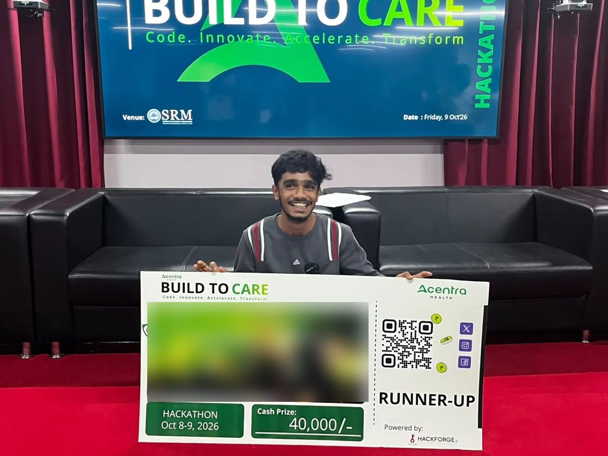

CareBridge
From Carepedia, the free encyclopedia
|
 The runner-up board at the Build to Care hackathon, 9 October 2026
| |
| Developer | Vidhursh Kumar |
|---|---|
| Origin | Build to Care hackathon team of five (runner-up) |
| First built | October 2026 |
| Latest version | v1 (Expo SDK 58), November 2026 |
| Platforms | iOS, Android (Expo); web admin console |
| Languages | English, Tamil, Hindi |
| Built with | FastAPI, Supabase, Groq gpt-oss, Expo, React |
| Status | Working demo; v2 in planning |
CareBridge is a hospital discharge follow-up app. It turns a patient's discharge summary into a doctor-approved, day-by-day plan of medicines, tests, appointments and warning signs, and reminds the patient and their family in English, Tamil or Hindi.[1]
The idea began at Build to Care, a hackathon organised by Acentra Health in October 2026, where its team of five finished as runner-up.[2] In the month that followed, Vidhursh Kumar built it into a working mobile app, a hospital admin console and the service behind them.[3]
The problem[edit]
A discharge summary is written for clinicians. At home, a patient and their family must turn it into a daily routine: which tablet after breakfast, which test on which day, which symptom means coming back. CareBridge does that conversion, and keeps a doctor in charge of it.
Approach[edit]
Main articles: How it works
The design principle is often summarised as "AI reads, rules decide, a doctor approves." The model only reads; deterministic rules check what it found; and nothing reaches a patient before a doctor has approved it.
Parts[edit]
Main articles: Features
| Part | Who uses it | What it does |
|---|---|---|
| Patient app | Patient | Daily plan, reminders read aloud, calendar, map |
| Family hub | Family | Shared care, missed-dose alerts, pill photos |
| Doctor review | Doctor | Summary beside plan, edit, approve |
| Admin console | Hospital | Triage, workload, reassignment, provider map |
See also[edit]
- Revision history: the project timeline, from the hackathon to v2
- Launch video
- Roadmap
References[edit]
- Kumar, Vidhursh (2026). CareBridge project specification and README.
- Acentra Health; Hackforge.ai (9 October 2026). Build to Care hackathon: runner-up board (photograph, infobox).
- Kumar, Vidhursh (November 2026). CareBridge decision log and build notes.